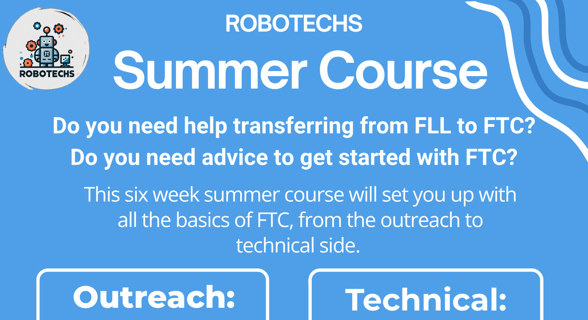

Robotechs FTC - Summer Course
From the Robotechs event archive.

Past event
Event details
July 11, 2026 – August 15, 2026
Robotechs Home · Near Wilson Wims Elementary School
Ready to level up your robotics journey? This six-week summer course has you covered with everything you need to successfully transition from FLL to FTC, from community outreach to hands-on technical building skills.
Back to eventsLocation
Robotechs Home
Near Wilson Wims Elementary School, Clarksburg, MD
Approximate area near Wilson Wims Elementary School. Contact the team for the exact meeting address.
Let’s build what’s next.
Support our next season, share an idea, or come learn with us.